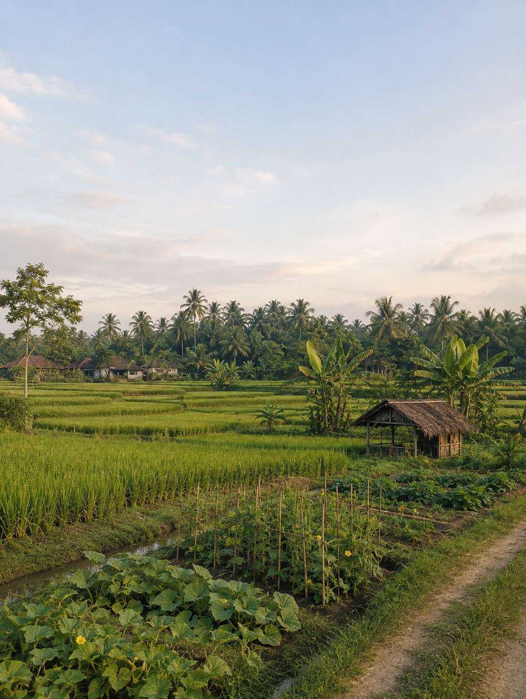

DOKUMENTASI
Keindahan Desa

🌾 Area Pertanian
Suasana lahan pedesaan.
🌳 Lingkungan Hijau
Keindahan alam pedesaan.

🌱 Pertanian
Aktivitas pertanian masyarakat.

🍃 Alam Desa
Suasana alami dan asri.

🏡 Pedesaan
Suasana kehidupan pedesaan.

🌅 Suasana Desa
Pemandangan pedesaan.